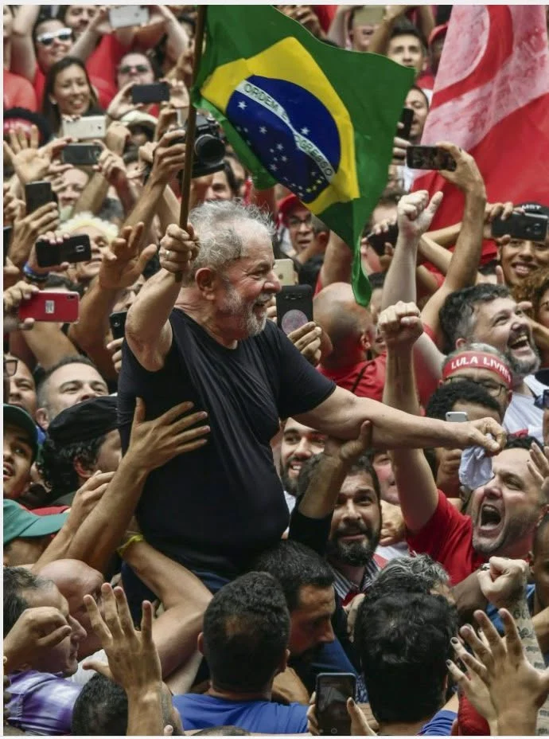

Publication d’archives
Au Brésil, une victoire et un chemin difficile
Date indiquée par Facebook · 31 octobre 2022
Texte conservé avec la publication
Lula remporte l'élection présidentielle au Brésil.
Le résultat est très serré. Lula Da Silva a été élu dimanche 30 octobre président du Brésil avec un score de 50,9 % des suffrages. Dans un pays coupé en deux, il ne sera pas facile de gouverner, mais c’est un espoir pour une politique sociale et écologique !
Repères éditoriaux
Le 31 octobre, la publication salue l’élection de Lula la veille, avec 50,9 % des suffrages selon le résultat arrondi qu’elle rapporte. L’espoir d’une politique sociale et écologique est immédiatement accompagné d’un avertissement : le pays est partagé et gouverner sera difficile. La victoire électorale ne dissout donc pas les conflits qui traversent la société brésilienne. Le message accueille une possibilité de changement sans présenter comme déjà réalisées les politiques attendues par ses soutiens.

Sources
Archive rouge · export Facebook · AR-0002-FB-01824
À lire aussi · Protéger les Kurdes de France